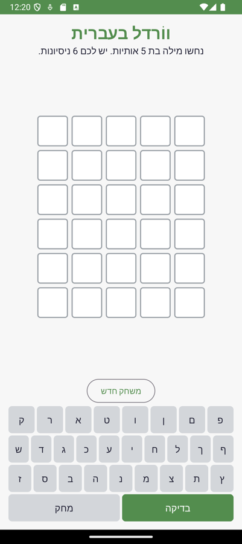
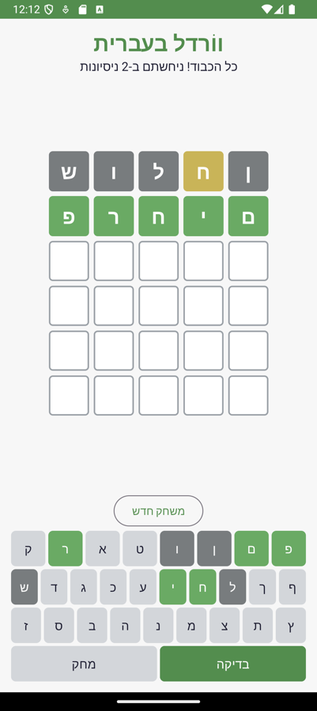
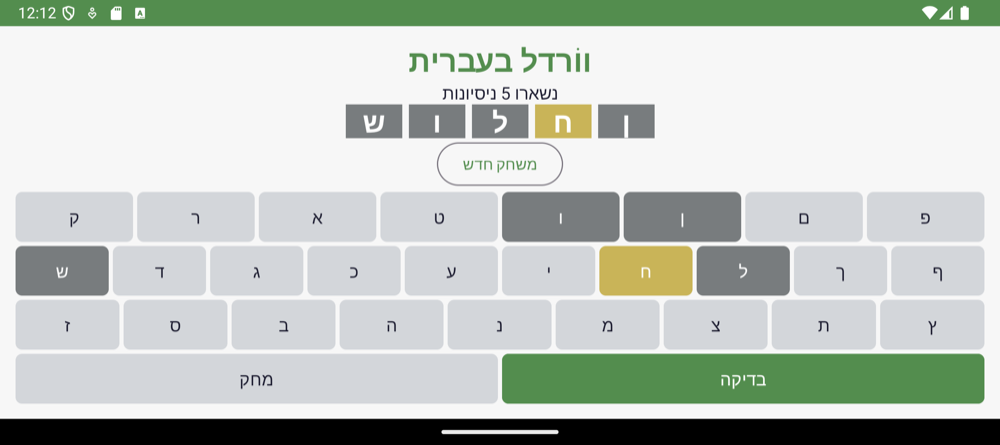

ברוכים הבאים ליחידה 2: ווֹרדל בעברית!
ווֹרדל הוא משחק פשוט להסבר וקשה להפסקה: צריך לנחש מילה בת 5 אותיות ב-6 ניסיונות. אחרי כל ניחוש האותיות נצבעות – ירוק לאות שנמצאת במקום הנכון, צהוב לאות שקיימת במילה אבל במקום אחר, ואפור לאות שלא במילה בכלל. בסוף היחידה יהיה לכם משחק עובד, בעברית, עם מקלדת על המסך, שממשיך בדיוק מאותה נקודה גם אחרי סיבוב של הטלפון.


מה לומדים ביחידה הזאת (לפי תוכנית הלימודים)
| נושא בתכ"ל | איפה זה מופיע במשחק | שלבים |
|---|---|---|
| מבוא לאפליקציה: Activity, מבנה הפרויקט, קובץ ההגדרות, מעגל חיי הפעילות | המסך היחיד של המשחק הוא Activity. נראה אותו נולד, נעצר, נהרס ונולד מחדש | 1, 2 |
| ממשק משתמש: רכיבים ותבניות XML מקוד, סידור בתבניות, שמירת מצב בשינוי תצורה | שלד המסך ב-ConstraintLayout, לוח של 30 אריחים שנבנה בלולאה, והלוח שורד סיבוב | 3, 4, 9 |
| טיפול באירועים: מאזינים ב-XML, פעילות מממשת, מחלקה פנימית, מאזין בשורה | ארבע דרכים לטפל בלחיצה – כל אחת על כפתור אחר, בכוונה | 6, 7, 8 |
| משאבי האפליקציה: מבנה תיקיית המשאבים, יצירה וארגון | strings, colors, dimens, drawables, ורשימת המילים כמשאב | 5 |
איך עובדים עם המדריך
- כל שלב מתחיל ב-"למה ככה?" – ההחלטה שמאחורי הקוד – ורק אחר כך מגיע הקוד. קראו את ההסבר לפני שאתם מעתיקים.
- בכל כרטיס קוד יש כפתור הצג קוד והעתק קוד. הקוד במדריך נלקח ישירות מהפרויקט הבנוי, אז הוא תמיד מתקמפל.
- כל שלב נגמר ב-תחנת אישור מורה: רשימת בדיקה ושאלת הבנה. לא ממשיכים לשלב הבא בלי לעבור אותה.
- את הפרויקט המלא אפשר להוריד מהקישור "קוד המקור של האפליקציה" למעלה – אבל המטרה היא לכתוב בעצמכם ולהשוות, לא להוריד ולהריץ.
⏱️ כמה זמן זה לוקח?
כ-8.5 שעות עבודה בכיתה ובמעבדה, מחולקות ל-9 שלבים. ליד כל שלב וכל תת-שלב יש הערכת זמן. אם אתם מהירים – הרחבות מופיעות בסוף כל שלב.
שלב 1: הפרויקט הראשון ⏱️ סה"כ כ-60 דק'
למה ככה?
אנדרואיד סטודיו יוצר בשבילכם עשרות קבצים. רובם לא מעניינים אתכם השנה, אבל חמישה מהם תפתחו כל שיעור. השלב הזה הוא סיור מודרך: לדעת איפה כל דבר יושב ומי קורא אותו. בלי זה, כל שגיאת קומפילציה נראית כמו קסם שחור.
א. יוצרים את הפרויקט ⏱️ 15 דק'
- 🆕 File → New → New Project, בוחרים Empty Views Activity (לא "Empty Activity" – זו Compose, שלא נלמד השנה).
- ✏️ Name:
HebrewWordle. Package name:com.example.hebrewwordle. Language: Java. Minimum SDK: API 24. - ⏳ Finish, וממתינים ל-Gradle Sync (הסרגל התחתון). בפעם הראשונה זה יכול לקחת כמה דקות.
- ▶️ לוחצים על החץ הירוק (Run). אם אין אמולטור: Device Manager → Create Device → Pixel 9a, מערכת API 34.
ב. סיור במבנה הפרויקט ⏱️ 25 דק'
עברו לתצוגת Project (התפריט הנפתח מעל עץ הקבצים, לא "Android") כדי לראות את התיקיות האמיתיות:
קובץ ההגדרות: AndroidManifest.xml
המניפסט הוא המקום היחיד שבו מערכת ההפעלה "קוראת עליכם" לפני שהאפליקציה רצה. כאן היא לומדת איזה מסך לפתוח כשלוחצים על האייקון, ואילו הרשאות אתם מבקשים. לנו יש מסך אחד:
<?xml version="1.0" encoding="utf-8"?>
<manifest xmlns:android="http://schemas.android.com/apk/res/android">
<application
android:allowBackup="true"
android:icon="@mipmap/ic_launcher"
android:label="@string/app_name"
android:roundIcon="@mipmap/ic_launcher_round"
android:supportsRtl="true"
android:theme="@style/Theme.App">
<!-- המסך היחיד של המשחק. exported + intent-filter: זו נקודת הכניסה מהלאנצ'ר -->
<activity
android:name=".MainActivity"
android:exported="true"
android:screenOrientation="unspecified">
<intent-filter>
<action android:name="android.intent.action.MAIN" />
<category android:name="android.intent.category.LAUNCHER" />
</intent-filter>
</activity>
</application>
</manifest>
android:label– השם שמופיע מתחת לאייקון. שימו לב שהוא לא כתוב כאן אלא מפנה ל-@string/app_name. למה? שלב 5.android:supportsRtl="true"– בלי זה, המקלדת העברית תסודר משמאל לימין.<intent-filter>עםMAINו-LAUNCHER– "אני המסך שפותחים מהאייקון". על Intents נדבר הרבה ביחידה 3.android:exported="true"– חובה על מסך שהלאנצ'ר (אפליקציה אחרת!) פותח. בלי זה הבנייה נכשלת.
קובץ ה-build: app/build.gradle
plugins {
id 'com.android.application'
}
android {
namespace 'com.example.hebrewwordle'
compileSdk 34
defaultConfig {
applicationId "com.example.hebrewwordle"
minSdk 24
targetSdk 34
versionCode 1
versionName "1.0"
testInstrumentationRunner "androidx.test.runner.AndroidJUnitRunner"
}
buildTypes {
release {
minifyEnabled false
proguardFiles getDefaultProguardFile('proguard-android-optimize.txt'), 'proguard-rules.pro'
}
}
compileOptions {
sourceCompatibility JavaVersion.VERSION_11
targetCompatibility JavaVersion.VERSION_11
}
}
dependencies {
implementation 'androidx.appcompat:appcompat:1.7.0'
implementation 'com.google.android.material:material:1.12.0'
implementation 'androidx.constraintlayout:constraintlayout:2.1.4'
testImplementation 'junit:junit:4.13.2'
}
| שורה | פירוש |
|---|---|
compileSdk 34 | מול איזו גרסת אנדרואיד הקוד מתקמפל. קובע אילו מתודות קיימות |
minSdk 24 | הגרסה הישנה ביותר שהאפליקציה מסכימה לרוץ עליה (אנדרואיד 7) |
targetSdk 34 | "בדקתי את עצמי מול 34" – משפיע על התנהגויות של המערכת |
applicationId | המזהה הייחודי בעולם. שתי אפליקציות עם אותו מזהה דורסות זו את זו |
dependencies | ספריות: appcompat (תאימות לאחור), material (הכפתורים), constraintlayout (שלב 3) |
ג. מריצים ומסתכלים על Logcat ⏱️ 20 דק'
הריצו את הפרויקט הריק. פתחו את החלון Logcat (למטה) והקלידו בשורת הסינון
package:mine. זה החלון שבו תבלו את השלב הבא. אם אתם רואים "Hello World!" באמולטור וזרם של שורות ב-Logcat – סיימתם.
⚠️ שלוש התקלות הנפוצות בשלב הזה
- Gradle sync failed – כמעט תמיד אין אינטרנט או שה-SDK לא נמצא. בדקו את
local.properties. - האמולטור לא עולה – ב-Device Manager מחקו את המכשיר ויצרו חדש; ודאו ש-Virtualization מופעל ב-BIOS.
- "Installed on … but not launched" – פשוט לחצו על האייקון באמולטור. זו לא שגיאה.
✅ ודאו לפני שאתם ניגשים למורה:
- הפרויקט רץ באמולטור ומציג את מסך הפתיחה הריק.
- אתם יכולים להצביע בעץ הקבצים על: המניפסט, ה-build של app, התבנית של המסך, ו-strings.xml – ולומר במשפט מה כל אחד עושה.
- Logcat פתוח ומסונן ל-
package:mine.
שינינו את
minSdk מ-24 ל-21.א. יותר טלפונים או פחות טלפונים יוכלו להתקין את האפליקציה?
ב. מה המחיר? רמז: מה קורה אם נקרא למתודה שנוספה באנדרואיד 7?
שלב 2: מעגל חיי הפעילות ⏱️ סה"כ כ-50 דק'
למה ככה?
Activity היא לא תוכנית רגילה עם main שרצה מההתחלה לסוף. היא אובייקט שמערכת ההפעלה מנהלת:
המערכת יוצרת אותה, מודיעה לה כשהיא עולה למסך, כשמשהו מכסה אותה, וכשהגיע זמנה למות.
כל הודעה כזאת היא מתודה (callback) שאתם יכולים לדרוס. אם לא מבינים את הסדר – כותבים קוד שמתחיל
מוזיקה ב-onCreate ולא מכבה אותה אף פעם, או מאבדים את הלוח בכל סיבוב.
המערכת יוצרת את הפעילות. פעם אחת לכל "חיים" שלה
המסך נהיה גלוי
המסך בחזית ומגיב ללחיצות
מאבד פוקוס (אולי עדיין גלוי)
לא גלוי בכלל. חזרה לאפליקציה: onRestart → onStart → onResume
סוף. בסיבוב מסך: מיד אחר כך onCreate חדש!
א. מוסיפים Log לכל שלב ⏱️ 20 דק'
ב-MainActivity דורסים את חמש המתודות. בכל אחת קוראים קודם ל-super (חובה – אחרת המערכת זורקת חריגה), ואז כותבים ל-Log עם תגית קבועה:
private static final String TAG = "LIFECYCLE";@Override
protected void onStart() {
super.onStart();
Log.d(TAG, "onStart - המסך נהיה גלוי");
}
@Override
protected void onResume() {
super.onResume();
Log.d(TAG, "onResume - המסך בחזית ומגיב ללחיצות");
}
@Override
protected void onPause() {
super.onPause();
Log.d(TAG, "onPause - משהו כיסה אותי, אני מאבד פוקוס");
}
@Override
protected void onStop() {
super.onStop();
Log.d(TAG, "onStop - אני כבר לא גלוי בכלל");
}
@Override
protected void onDestroy() {
super.onDestroy();
Log.d(TAG, "onDestroy - הפעילות נהרסת (סיבוב מסך או סגירה)");
}
הגרסה המלאה של onCreate מופיעה בשלב 8, כי היא קוראת למתודות שעוד לא כתבנו. בינתיים השאירו בה רק את setContentView ואת שורת ה-Log.
ב. משחקים עם הטלפון ⏱️ 20 דק'
סננו את Logcat לפי LIFECYCLE ובצעו את הרצף הבא. רשמו ליד כל פעולה אילו שורות הופיעו:
| פעולה | מה תראו ב-Logcat | למה |
|---|---|---|
| הרצה ראשונה | onCreate → onStart → onResume | לידה מלאה |
| כפתור הבית | onPause → onStop | האפליקציה חיה ברקע, לא נהרסה |
| חזרה לאפליקציה | onStart → onResume (בלי onCreate!) | אותו אובייקט חוזר לחזית |
| סיבוב מסך | onPause → onStop → onDestroy → onCreate → onStart → onResume | הפעילות נהרגת ונולדת מחדש – כל השדות מתאפסים! |
| כפתור "אחורה" | onPause → onStop → onDestroy | סוף אמיתי |
זה הפלט האמיתי מהאמולטור של המשחק הגמור, אחרי ניחוש אחד וסיבוב מסך:
🤔 אז למה בכלל להרוג את הפעילות בסיבוב?
כי בסיבוב ייתכן שצריך תבנית אחרת לגמרי (למשל layout-land/), צבעים אחרים, מחרוזות בשפה אחרת.
הדרך הפשוטה ביותר להבטיח שהכול נטען מחדש נכון היא להתחיל מאפס. המחיר: אנחנו אחראים לשמור את מה שחשוב.
זה בדיוק שלב 9, ואת השורות onSaveInstanceState ו-restoreGame בפלט למעלה נכתוב שם.
✅ ודאו לפני שאתם ניגשים למורה:
- חמש המתודות דרוסות, כל אחת קוראת ל-
superבשורה הראשונה. - מילאתם את הטבלה מהניסוי שלכם, והיא תואמת לטבלה במדריך.
- אתם יכולים להסביר למה "חזרה לאפליקציה" לא מפעילה
onCreateאבל "סיבוב" כן.
תלמידה שמה את ההגרלה של המילה הסודית בתוך
onCreate.א. מה יקרה למילה הסודית כשהמשתמש יסובב את המסך באמצע משחק?
ב. האם להעביר את ההגרלה ל-
onStart פותר את זה? הסבירו.
שלב 3: שלד המסך ב-ConstraintLayout ⏱️ סה"כ כ-60 דק'
למה ככה? למה ConstraintLayout?
באנדרואיד אין "מסך בגודל קבוע". אותה אפליקציה רצה על טלפון צר ועל טאבלט רחב. לכן לא כותבים "הכפתור במרחק 300 פיקסלים מלמעלה",
אלא יחסים: "הלוח מתחת להודעה ומעל הכפתור, ממורכז". ConstraintLayout הוא תבנית שבה כל רכיב
מוגדר על ידי אילוצים (constraints) לרכיבים אחרים או להורה. רכיב בלי אילוצים "קופץ" לפינה השמאלית-עליונה – זו הטעות מספר אחת.
א. התבנית ⏱️ 30 דק'
פתחו את res/layout/activity_main.xml בתצוגת Code (לא Design – נלמד לקרוא XML) והחליפו את התוכן:
<?xml version="1.0" encoding="utf-8"?>
<!--
שלד המסך: ConstraintLayout אחד שמחזיק ארבעה אזורים מלמעלה למטה.
הלוח עצמו (boardContainer) ריק ב-XML: שלושים האריחים נבנים בקוד ב-MainActivity.
-->
<androidx.constraintlayout.widget.ConstraintLayout xmlns:android="http://schemas.android.com/apk/res/android"
xmlns:app="http://schemas.android.com/apk/res-auto"
android:layout_width="match_parent"
android:layout_height="match_parent"
android:padding="@dimen/screen_padding">
<TextView
android:id="@+id/txtTitle"
android:layout_width="0dp"
android:layout_height="wrap_content"
android:gravity="center"
android:text="@string/title"
android:textColor="@color/primary"
android:textSize="28sp"
android:textStyle="bold"
app:layout_constraintEnd_toEndOf="parent"
app:layout_constraintStart_toStartOf="parent"
app:layout_constraintTop_toTopOf="parent" />
<TextView
android:id="@+id/txtMessage"
android:layout_width="0dp"
android:layout_height="wrap_content"
android:gravity="center"
android:text="@string/msg_start"
android:textColor="@color/ink"
android:textSize="16sp"
app:layout_constraintEnd_toEndOf="parent"
app:layout_constraintStart_toStartOf="parent"
app:layout_constraintTop_toBottomOf="@id/txtTitle" />
<LinearLayout
android:id="@+id/boardContainer"
android:layout_width="wrap_content"
android:layout_height="0dp"
android:gravity="center"
android:orientation="vertical"
app:layout_constraintBottom_toTopOf="@id/btnNewGame"
app:layout_constraintEnd_toEndOf="parent"
app:layout_constraintStart_toStartOf="parent"
app:layout_constraintTop_toBottomOf="@id/txtMessage" />
<Button
android:id="@+id/btnNewGame"
style="@style/Widget.Material3.Button.OutlinedButton"
android:layout_width="wrap_content"
android:layout_height="wrap_content"
android:text="@string/new_game"
app:layout_constraintBottom_toTopOf="@id/keyboard"
app:layout_constraintEnd_toEndOf="parent"
app:layout_constraintStart_toStartOf="parent" />
<!-- שימו לב: ה-id שניתן ל-include דורס את ה-id של שורש התבנית המוכללת.
לכן בקוד מחפשים R.id.keyboard - ה-id שכתוב כאן, לא זה שבתוך keyboard.xml -->
<include
android:id="@+id/keyboard"
layout="@layout/keyboard"
android:layout_width="0dp"
android:layout_height="wrap_content"
app:layout_constraintBottom_toBottomOf="parent"
app:layout_constraintEnd_toEndOf="parent"
app:layout_constraintStart_toStartOf="parent" />
</androidx.constraintlayout.widget.ConstraintLayout>
איך קוראים אילוץ
| מאפיין | פירוש |
|---|---|
layout_constraintTop_toBottomOf="@id/txtTitle" | "הצד העליון שלי צמוד לצד התחתון של הכותרת" |
layout_constraintStart_toStartOf="parent" + End_toEndOf="parent" | אילוץ משני הצדדים = מרכוז אופקי |
layout_width="0dp" | "match constraints": תמלא את כל המרחב שהאילוצים מרשים |
layout_height="0dp" על הלוח | הלוח תופס את כל הגובה שנשאר בין ההודעה לכפתור |
Start / End ולא Left / Right | ב-RTL "התחלה" היא ימין. תמיד Start/End |
⚠️ include דורס את ה-id
המקלדת יושבת בקובץ נפרד (keyboard.xml, שלב 6) ומוכללת עם <include>.
כש-include מקבל android:id, ה-id הזה מחליף את ה-id של שורש הקובץ המוכלל. אם בקוד תחפשו את ה-id הפנימי
תקבלו null וקריסה ב-onCreate. כך בדיוק קרס המשחק הזה בהרצה הראשונה שלו – אל תחזרו על זה.
ב. בודקים בשני גדלים ⏱️ 15 דק'
הלוח עדיין ריק (הוא נבנה בקוד בשלב הבא), אבל כבר אפשר לבדוק את השלד. בתצוגת Design לחצו על אייקון המכשיר ובחרו פעם Pixel 9a ופעם טאבלט. הכותרת וההודעה צריכות להישאר ממורכזות, והמקלדת צמודה לתחתית בשניהם.
הריצו גם על האמולטור. המסך צריך להיראות כך (עוד בלי אריחים):
ג. הרחבה: מסך לרוחב ⏱️ 15 דק'
סובבו את האמולטור. הלוח יחתך, כי בגובה של מסך רוחבי אין מקום ל-6 שורות של 52dp ועוד מקלדת.
פתרון: תיקיית res/layout-land/ עם גרסה שנייה של התבנית, שבה הלוח והמקלדת זה לצד זה. המערכת בוחרת לבד לפי הכיוון – זה בדיוק אחד
ממנגנוני המשאבים של שלב 5. נסו, זה תרגיל טוב, אבל לא חובה.
✅ ודאו לפני שאתם ניגשים למורה:
- אין אף רכיב עם אזהרת "not constrained" בעורך.
- הכותרת וההודעה נשארות ממורכזות גם על טאבלט.
- אתם יכולים להסביר מה ההבדל בין
wrap_content,match_parentו-0dp.
מחקנו מ-
txtMessage את האילוץ layout_constraintEnd_toEndOf והשארנו רק Start ו-Top.א. איפה הטקסט יופיע עכשיו?
ב. מה יקרה ל-
layout_width="0dp" שלו? למה זו שגיאה?
שלב 4: הלוח נבנה בקוד ⏱️ סה"כ כ-60 דק'
למה ככה? למה לא 30 TextViews ב-XML?
אפשר. זה יעבוד. אבל זה 30 בלוקים זהים של 8 שורות כל אחד, ועוד 30 findViewById בקוד.
וכשתרצו לשנות את גודל האריח – 30 מקומות לערוך. בקוד זו לולאה אחת, והמערך tiles[row][col]
נותן לנו בדיוק את מה שהמשחק צריך: "האריח בשורה 2, עמודה 3". כלל אצבע: רכיבים ייחודיים ב-XML, רכיבים חוזרים בקוד.
א. השדות ⏱️ 5 דק'
private TextView[][] tiles; // [שורה][עמודה] - 6×5
private LinearLayout boardContainer;
private TextView txtMessage;ב. בונים את הלוח ⏱️ 30 דק'
/**
* בונה 6 שורות של 5 אריחים בקוד. כל אריח הוא TextView רגיל עם רקע מ-drawable.
* למה בקוד ולא ב-XML? כי 30 רכיבים זהים ב-XML הם 30 הזדמנויות לטעות העתקה,
* ואילו לולאה כפולה היא 8 שורות.
*/
private void buildBoard() {
Resources res = getResources();
int size = res.getDimensionPixelSize(R.dimen.tile_size);
int margin = res.getDimensionPixelSize(R.dimen.tile_margin);
tiles = new TextView[WordleGame.MAX_GUESSES][WordleGame.WORD_LENGTH];
boardContainer.removeAllViews();
for (int row = 0; row < WordleGame.MAX_GUESSES; row++) {
LinearLayout rowLayout = new LinearLayout(this);
rowLayout.setOrientation(LinearLayout.HORIZONTAL);
rowLayout.setGravity(Gravity.CENTER);
for (int col = 0; col < WordleGame.WORD_LENGTH; col++) {
TextView tile = new TextView(this);
LinearLayout.LayoutParams lp = new LinearLayout.LayoutParams(size, size);
lp.setMargins(margin, margin, margin, margin);
tile.setLayoutParams(lp);
tile.setGravity(Gravity.CENTER);
tile.setTextSize(android.util.TypedValue.COMPLEX_UNIT_PX, res.getDimension(R.dimen.tile_text));
tile.setTypeface(null, android.graphics.Typeface.BOLD);
paintTile(tile, LetterState.EMPTY);
tiles[row][col] = tile;
rowLayout.addView(tile);
}
boardContainer.addView(rowLayout);
}
}
/** צובע אריח אחד לפי מצב. הצבעים עצמם יושבים ב-colors.xml וב-drawable. */
private void paintTile(TextView tile, LetterState state) {
int bg;
int textColor = R.color.tile_text_light;
switch (state) {
case CORRECT: bg = R.drawable.tile_correct; break;
case PRESENT: bg = R.drawable.tile_present; break;
case ABSENT: bg = R.drawable.tile_absent; break;
default: bg = R.drawable.tile_empty; textColor = R.color.tile_text; break;
}
tile.setBackground(ContextCompat.getDrawable(this, bg));
tile.setTextColor(ContextCompat.getColor(this, textColor));
}- LayoutParams – כשיוצרים רכיב בקוד, הגודל והשוליים לא נכתבים עליו אלא על אובייקט "פרמטרים של תבנית" שמתאים להורה שלו. ההורה כאן הוא
LinearLayout, ולכןLinearLayout.LayoutParams. - dp לעומת px – ב-
dimens.xmlכתוב 52dp. המסך עובד בפיקסלים, וצפיפות הפיקסלים שונה בכל טלפון.getDimensionPixelSizeעושה את ההמרה בשבילנו. - paintTile – מתודה אחת שמקבלת מצב ומחליפה רקע וצבע טקסט. היא תשרת אותנו גם בשלב 8 (צביעה אחרי ניחוש) וגם בשלב 9 (שחזור). כתבו אותה פעם אחת.
- ב-
onCreateקוראיםbuildBoard()מיד אחריfindViewByIdשל המיכל.
ג. בדיקה ⏱️ 10 דק'
הריצו. אמורים לראות 30 ריבועים לבנים עם מסגרת אפורה. כדי לוודא שהמערך נכון, הוסיפו זמנית ב-onCreate
את השורה tiles[2][4].setText("א"); – האות צריכה להופיע בשורה השלישית, באריח הימני (עמודה 0 היא ימין, כי RTL). מחקו אחר כך.
ד. הרחבה ⏱️ 15 דק'
החליפו את LinearLayout המקונן ב-GridLayout אחד עם columnCount=5. מה יותר קצר? מה קורה לשוליים?
✅ ודאו לפני שאתם ניגשים למורה:
- 30 אריחים על המסך, ממורכזים, בגודל אחיד.
- הניסוי עם
tiles[2][4]הציג את האות במקום הנכון. - אתם יכולים להסביר למה האריח צריך
LayoutParamsולמה לא כותביםsetWidth(52).
תלמיד שינה את
tile_size ב-dimens.xml ל-80dp, ועל הטלפון שלו שתי השורות התחתונות נעלמו.א. למה הן נעלמו ולא "נדחסו"?
ב. הציעו שני פתרונות: אחד ב-XML ואחד בקוד.
שלב 5: משאבי האפליקציה ⏱️ סה"כ כ-50 דק'
res/, ולהבין איך אנדרואיד בוחר משאב לפי המכשיר.למה ככה?
"כל הכבוד! ניחשתם ב-2 ניסיונות" יכול להיכתב ישירות בקוד. אבל אז: תרגום לערבית = לחפש בכל הקוד; שינוי הירוק = לחפש בכל הקוד;
אריח גדול יותר לטאבלט = לכתוב תנאים. ב-res/ כל דבר כזה יושב במקום אחד, עם שם, והקוד מתייחס לשם.
ויש בונוס: אנדרואיד יודע לבחור לבד בין values/ ל-values-ar/ לפי שפת המכשיר, ובין layout/ ל-layout-land/ לפי הכיוון.
א. מחרוזות ⏱️ 10 דק'
<?xml version="1.0" encoding="utf-8"?>
<resources>
<string name="app_name">ווֹרדל בעברית</string>
<string name="title">ווֹרדל בעברית</string>
<string name="msg_start">נחשו מילה בת 5 אותיות. יש לכם 6 ניסיונות.</string>
<string name="msg_too_short">צריך 5 אותיות לפני הבדיקה</string>
<string name="msg_win">כל הכבוד! ניחשתם ב-%1$d ניסיונות</string>
<string name="msg_lose">נגמרו הניסיונות. המילה הייתה: %1$s</string>
<string name="msg_guesses_left">נשארו %1$d ניסיונות</string>
<string name="key_delete">מחק</string>
<string name="key_check">בדיקה</string>
<string name="new_game">משחק חדש</string>
</resources>
שימו לב ל-%1$d ו-%1$s: מחרוזת עם "חור" למספר או לטקסט. בקוד: getString(R.string.msg_win, 2).
לעולם לא "ניחשתם ב-" + n + " ניסיונות" בקוד – בשפות אחרות סדר המילים שונה.
ב. צבעים ומידות ⏱️ 10 דק'
<?xml version="1.0" encoding="utf-8"?>
<resources>
<color name="primary">#538D4E</color>
<color name="on_primary">#FFFFFF</color>
<color name="secondary">#B59F3B</color>
<color name="on_secondary">#FFFFFF</color>
<color name="white">#FFFFFF</color>
<color name="ink">#1A1A2E</color>
<!-- ארבעת מצבי האות -->
<color name="tile_empty">#FFFFFF</color>
<color name="tile_border">#9AA0A6</color>
<color name="tile_absent">#787C7E</color>
<color name="tile_present">#C9B458</color>
<color name="tile_correct">#6AAA64</color>
<color name="tile_text">#1A1A2E</color>
<color name="tile_text_light">#FFFFFF</color>
<color name="key_bg">#D3D6DA</color>
<color name="screen_bg">#F7F7F7</color>
</resources>
<?xml version="1.0" encoding="utf-8"?>
<resources>
<dimen name="tile_size">52dp</dimen>
<dimen name="tile_margin">3dp</dimen>
<dimen name="tile_text">26sp</dimen>
<dimen name="key_height">46dp</dimen>
<dimen name="key_margin">2dp</dimen>
<dimen name="key_text">16sp</dimen>
<dimen name="screen_padding">12dp</dimen>
</resources>
ג. צורות: drawable ⏱️ 10 דק'
רקע של אריח הוא לא תמונה אלא צורה שמתוארת ב-XML: מלבן, צבע מילוי, מסגרת, פינות מעוגלות. ארבעה קבצים, אחד לכל מצב. הנה הירוק:
<?xml version="1.0" encoding="utf-8"?>
<!-- רקע אריח במצב correct -->
<shape xmlns:android="http://schemas.android.com/apk/res/android" android:shape="rectangle">
<solid android:color="@color/tile_correct" />
<stroke android:width="2dp" android:color="@color/tile_correct" />
<corners android:radius="4dp" />
</shape>
צרו באותו אופן את tile_present, tile_absent ו-tile_empty (ללבן: מילוי לבן ומסגרת tile_border).
ד. ערכת נושא וסגנון ⏱️ 10 דק'
<?xml version="1.0" encoding="utf-8"?>
<resources>
<style name="Theme.App" parent="Theme.Material3.DayNight.NoActionBar">
<item name="colorPrimary">@color/primary</item>
<item name="colorOnPrimary">@color/on_primary</item>
<item name="colorSecondary">@color/secondary</item>
<item name="colorOnSecondary">@color/on_secondary</item>
<item name="android:statusBarColor">@color/primary</item>
<item name="android:windowBackground">@color/screen_bg</item>
</style>
<!-- מקש אות במקלדת: כל 27 המקשים חולקים את הסגנון הזה -->
<style name="KeyButton" parent="Widget.Material3.Button.TextButton">
<item name="android:layout_width">0dp</item>
<item name="android:layout_height">@dimen/key_height</item>
<item name="android:layout_weight">1</item>
<item name="android:layout_margin">@dimen/key_margin</item>
<item name="android:minWidth">0dp</item>
<item name="android:insetTop">0dp</item>
<item name="android:insetBottom">0dp</item>
<item name="android:padding">0dp</item>
<item name="android:textSize">@dimen/key_text</item>
<item name="android:textColor">@color/ink</item>
<item name="backgroundTint">@color/key_bg</item>
<item name="cornerRadius">6dp</item>
<item name="android:onClick">onLetterKey</item>
</style>
</resources>
Theme הוא סגנון של האפליקציה כולה (צבע ראשי, סרגל מצב, רקע). Style הוא חבילת מאפיינים לרכיב אחד.
הסגנון KeyButton הוא הסיבה שבשלב 6 כל מקש במקלדת הוא שורה אחת של XML במקום עשר. שימו לב לשורה האחרונה בו – נחזור אליה.
ה. רשימת המילים כמשאב ⏱️ 10 דק'
המילים הן נתונים, לא קוד. string-array נותן לנו מערך מוכן: getResources().getStringArray(R.array.words).
מי שרוצה להוסיף מילים לא צריך להבין Java.
<?xml version="1.0" encoding="utf-8"?>
<resources>
<!-- מאגר המילים: כל מילה בת 5 אותיות בדיוק. אפשר להוסיף ולמחוק מילים כאן בלי לגעת בקוד. -->
<string-array name="words">
<item>שולחן</item>
<item>מקלדת</item>
<item>תלמיד</item>
<item>מורים</item>
<item>ספרים</item>
<item>חברים</item>
<item>ילדים</item>
<item>בניין</item>
<item>מכונה</item>
<item>מכשיר</item>
<item>טלפון</item>
<item>מחברת</item>
<item>אבטיח</item>
<item>אגסים</item>
<item>שמשיה</item>
<item>מטריה</item>
<item>מחשבה</item>
<item>ספינה</item>
<item>שמיים</item>
<item>מדינה</item>
<item>גבינה</item>
<item>עוגיה</item>
<item>עוגות</item>
<item>פלאפל</item>
<item>חומוס</item>
<item>סלטים</item>
<item>בקבוק</item>
<item>כוסות</item>
<item>שמיכה</item>
<item>מדפים</item>
<item>דלתות</item>
<item>קירות</item>
<item>מנהלת</item>
<item>רופאה</item>
<item>שוטרת</item>
<item>כבאים</item>
<item>נהגים</item>
<item>כלבים</item>
<item>חתולה</item>
<item>סוסים</item>
<item>ציפור</item>
<item>נמלים</item>
<item>פילים</item>
<item>קופים</item>
<item>אריות</item>
<item>נמרים</item>
<item>זברות</item>
<item>פרחים</item>
<item>יערות</item>
<item>נהרות</item>
<item>אגמים</item>
<item>חופים</item>
<item>גשמים</item>
<item>רוחות</item>
<item>עננים</item>
<item>שלגים</item>
<item>תוכנה</item>
<item>חומרה</item>
<item>מסכים</item>
<item>רמקול</item>
<item>מצלמה</item>
<item>מדפסת</item>
<item>עברית</item>
<item>ערבית</item>
<item>כימיה</item>
<item>שיעור</item>
<item>הפסקה</item>
<item>בחינה</item>
<item>שאלות</item>
<item>תשובה</item>
<item>תעודה</item>
<item>חידות</item>
<item>קלפים</item>
<item>שירים</item>
<item>ריקוד</item>
<item>גיטרה</item>
<item>תופים</item>
<item>כינור</item>
<item>חברות</item>
<item>משפחה</item>
<item>הורים</item>
<item>אחיות</item>
<item>דודים</item>
<item>תיקים</item>
<item>מגפים</item>
<item>חולצה</item>
<item>שניות</item>
<item>ארוחה</item>
<item>לחמים</item>
<item>ביצים</item>
<item>ספורט</item>
<item>שחייה</item>
<item>גלידה</item>
<item>סיפור</item>
<item>משורר</item>
<item>עיתון</item>
<item>מספרה</item>
<item>כרטיס</item>
<item>תחנות</item>
<item>רכבות</item>
<item>טייסת</item>
<item>קניון</item>
<item>שכונה</item>
<item>רמזור</item>
<item>גשרים</item>
</string-array>
</resources>
🤔 מה זה R?
בכל בנייה אנדרואיד סורק את res/ ומייצר מחלקה בשם R עם מספר לכל משאב: R.string.msg_win, R.color.tile_correct,
R.id.btnCheck. זה למה שגיאת כתיב בשם משאב היא שגיאת קומפילציה ולא קריסה בזמן ריצה – המהדר בודק בשבילכם. ואם ה-R "אדום" פתאום – כמעט תמיד יש XML שבור באחד הקבצים.
✅ ודאו לפני שאתם ניגשים למורה:
- אין בקוד Java אף מחרוזת עברית ואף צבע הקסדצימלי.
- ארבעת ה-drawables מוצגים נכון: שנו זמנית את
paintTileבבדיקה של שלב 4 לכל מצב. - הוספתם 5 מילים משלכם ל-
words.xml, כולן בנות 5 אותיות.
רוצים שעל טאבלט האריח יהיה 80dp ועל טלפון 52dp, בלי אף
if בקוד.א. איזו תיקייה יוצרים ואיזה קובץ שמים בה?
ב. איך אנדרואיד יודע באיזו מהן להשתמש?
שלב 6: המקלדת העברית – דרך 1, מאזין ב-XML ⏱️ סה"כ כ-50 דק'
android:onClick, ולהכניס אותיות לשורה הנוכחית.למה ככה?
לחיצה על כפתור היא אירוע. מישהו צריך "להאזין" לו. באנדרואיד יש ארבע דרכים לרשום מאזין, וביחידה הזאת נשתמש בכל הארבע, כל אחת על כפתור אחר,
כדי שתרגישו את ההבדל. הראשונה והפשוטה: לכתוב ב-XML את שם המתודה. המערכת, בזמן הלחיצה, מחפשת בפעילות מתודה public void בשם הזה שמקבלת View.
זה נהדר ל-27 מקשים זהים: שורה אחת בסגנון, ואפס שורות חיבור בקוד.
א. קובץ המקלדת ⏱️ 20 דק'
<?xml version="1.0" encoding="utf-8"?>
<!--
המקלדת העברית. כל מקש הוא Button עם style="@style/KeyButton", והסגנון מכיל
android:onClick="onLetterKey" - כלומר כל 27 המקשים קוראים לאותה מתודה בפעילות
(דרך 1 לטיפול באירועים: מאזין ב-XML).
הסידור הוא לפי המקלדת הפיזית, מימין לשמאל, כי supportsRtl="true".
-->
<LinearLayout xmlns:android="http://schemas.android.com/apk/res/android"
android:id="@+id/keyboard"
android:layout_width="match_parent"
android:layout_height="wrap_content"
android:orientation="vertical">
<LinearLayout
android:layout_width="match_parent"
android:layout_height="wrap_content"
android:orientation="horizontal">
<Button style="@style/KeyButton" android:text="ק" />
<Button style="@style/KeyButton" android:text="ר" />
<Button style="@style/KeyButton" android:text="א" />
<Button style="@style/KeyButton" android:text="ט" />
<Button style="@style/KeyButton" android:text="ו" />
<Button style="@style/KeyButton" android:text="ן" />
<Button style="@style/KeyButton" android:text="ם" />
<Button style="@style/KeyButton" android:text="פ" />
</LinearLayout>
<LinearLayout
android:layout_width="match_parent"
android:layout_height="wrap_content"
android:orientation="horizontal">
<Button style="@style/KeyButton" android:text="ש" />
<Button style="@style/KeyButton" android:text="ד" />
<Button style="@style/KeyButton" android:text="ג" />
<Button style="@style/KeyButton" android:text="כ" />
<Button style="@style/KeyButton" android:text="ע" />
<Button style="@style/KeyButton" android:text="י" />
<Button style="@style/KeyButton" android:text="ח" />
<Button style="@style/KeyButton" android:text="ל" />
<Button style="@style/KeyButton" android:text="ך" />
<Button style="@style/KeyButton" android:text="ף" />
</LinearLayout>
<LinearLayout
android:layout_width="match_parent"
android:layout_height="wrap_content"
android:orientation="horizontal">
<Button style="@style/KeyButton" android:text="ז" />
<Button style="@style/KeyButton" android:text="ס" />
<Button style="@style/KeyButton" android:text="ב" />
<Button style="@style/KeyButton" android:text="ה" />
<Button style="@style/KeyButton" android:text="נ" />
<Button style="@style/KeyButton" android:text="מ" />
<Button style="@style/KeyButton" android:text="צ" />
<Button style="@style/KeyButton" android:text="ת" />
<Button style="@style/KeyButton" android:text="ץ" />
</LinearLayout>
<!-- שני המקשים האלה לא מקבלים onClick ב-XML בכוונה: הם מחוברים מהקוד (דרכים 2 ו-3) -->
<LinearLayout
android:layout_width="match_parent"
android:layout_height="wrap_content"
android:orientation="horizontal">
<Button
android:id="@+id/btnDelete"
style="@style/KeyButton"
android:layout_weight="2"
android:onClick="@null"
android:text="@string/key_delete" />
<Button
android:id="@+id/btnCheck"
style="@style/KeyButton"
android:layout_weight="2"
android:onClick="@null"
android:backgroundTint="@color/primary"
android:textColor="@color/white"
android:text="@string/key_check" />
</LinearLayout>
</LinearLayout>
- הסידור הוא של המקלדת הפיזית. בגלל
supportsRtl, הילד הראשון ב-LinearLayoutאופקי יושב מימין. layout_weight="1"לכל מקש +layout_width="0dp"= חלוקה שווה של הרוחב. שורה של 10 מקשים מקבלת מקשים צרים יותר משורה של 8 – בדיוק כמו במקלדת.- "מחק" ו"בדיקה" מקבלים
android:onClick="@null"כדי לבטל את ה-onClick שירשו מהסגנון. אותם נחבר בדרכים אחרות בשלב 7.
ב. המתודה בפעילות ⏱️ 15 דק'
/**
* דרך 1: מאזין ב-XML. כל 27 מקשי האותיות מצהירים android:onClick="onLetterKey"
* (דרך הסגנון KeyButton), ולכן אנדרואיד מחפש כאן מתודה public בשם הזה
* שמקבלת View אחד. הטקסט של הכפתור הוא האות עצמה.
*/
public void onLetterKey(View view) {
if (game.isOver()) return;
if (current.length() >= WordleGame.WORD_LENGTH) return;
char letter = ((Button) view).getText().charAt(0);
current.append(letter);
int row = game.getGuessCount();
tiles[row][current.length() - 1].setText(String.valueOf(letter));
}
הפרמטר view הוא הכפתור שנלחץ. אנחנו לא צריכים 27 מתודות, כי הטקסט של הכפתור הוא האות. שימו לב לשני תנאי העצירה: אחרי סיום המשחק ואחרי 5 אותיות
אין מה להוסיף. current הוא StringBuilder שמחזיק את מה שהוקלד; הוא מוגדר בשלב 8 יחד עם game – בינתיים הוסיפו אותו כשדה ואתחלו את game במילה קבועה.
⚠️ השגיאה שתראו בוודאות
IllegalStateException: Could not find method onLetterKey(View) – המתודה לא public, או לא מקבלת View, או שיש טעות כתיב בין ה-XML לקוד.
זו החולשה של דרך 1: הקשר בין ה-XML לקוד הוא מחרוזת, והמהדר לא בודק אותה. הקריסה מגיעה רק בלחיצה.
ג. בדיקה ⏱️ 15 דק'
הריצו, הקלידו 5 אותיות. האותיות צריכות להופיע בשורה הראשונה מימין לשמאל, והאות השישית לא נכנסת.
✅ ודאו לפני שאתם ניגשים למורה:
- 27 מקשים, שלוש שורות, הסידור כמו במקלדת פיזית.
- אין אף
setOnClickListenerעבור מקשי האותיות. - אתם יכולים להסביר מאיפה המתודה יודעת איזו אות נלחצה.
תלמידה שינתה את שם המתודה ל-
onLetter ושכחה לעדכן את הסגנון. הפרויקט התקמפל והאפליקציה עלתה.א. מתי בדיוק תתגלה הטעות?
ב. מה היה קורה באותו מקרה בדרך 2 (שלב הבא)?
שלב 7: מחיקה ובדיקה – דרכים 2 ו-3 ⏱️ סה"כ כ-50 דק'
OnClickListener, ואת "בדיקה" דרך מחלקה פנימית – ולהבין מתי כל דרך מתאימה.למה ככה?
setOnClickListener מקבל אובייקט שמממש את הממשק View.OnClickListener (מתודה אחת: onClick(View)).
השאלה היא רק מי האובייקט הזה. דרך 2: הפעילות עצמה (this). דרך 3: מחלקה פנימית שכתבנו. בשתיהן המהדר בודק שהמתודה קיימת –
זה היתרון הגדול על דרך 1.
א. דרך 2: הפעילות מממשת ⏱️ 15 דק'
שלוש פעולות: (1) implements View.OnClickListener בכותרת המחלקה; (2) דורסים onClick; (3) ב-wireButtons מעבירים this.
/**
* דרך 2: הפעילות עצמה מממשת OnClickListener. כפתור "מחק" מקבל this כמאזין
* (ראו wireButtons), ולכן הלחיצה מגיעה לכאן. כשיש כמה כפתורים עם אותו מאזין,
* מבדילים ביניהם לפי view.getId().
*/
@Override
public void onClick(View view) {
if (view.getId() == R.id.btnDelete) {
if (game.isOver() || current.length() == 0) return;
current.deleteCharAt(current.length() - 1);
int row = game.getGuessCount();
tiles[row][current.length()].setText("");
}
}
מתי זה מתאים? כשיש הרבה כפתורים ורוצים מקום אחד. החיסרון: onClick אחת הופכת לסדרת if (view.getId() == ...). אצלנו יש בה כפתור אחד, בכוונה, כדי שתראו את הצורה.
ב. דרך 3: מחלקה פנימית ⏱️ 20 דק'
/**
* דרך 3: מחלקה פנימית. למחלקה פנימית (לא static) יש גישה לכל השדות של הפעילות
* - game, tiles, current - בלי להעביר אותם כפרמטרים.
*/
private class CheckListener implements View.OnClickListener {
@Override
public void onClick(View view) {
if (game.isOver()) return;
if (current.length() < WordleGame.WORD_LENGTH) {
txtMessage.setText(R.string.msg_too_short);
return;
}
Guess guess = game.submit(current.toString());
int row = game.getGuessCount() - 1;
showGuess(row, guess);
current.setLength(0);
updateMessage();
}
}
CheckListener היא מחלקה שלמה בתוך MainActivity. בגלל שהיא לא static, יש לה גישה ישירה ל-game, tiles, current ו-txtMessage.
מתי זה מתאים? כשהמאזין עושה עבודה אמיתית (כאן: בדיקה, צביעה, הודעה) ומגיע לו שם משלו. המתודות showGuess ו-updateMessage נכתבות בשלב הבא.
ג. חיבור ⏱️ 5 דק'
שתי השורות הראשונות של wireButtons (השלישית – בשלב 8):
ד. בדיקה ⏱️ 10 דק'
הקלידו שלוש אותיות, לחצו "מחק" פעמיים – נשארת אחת. לחצו "בדיקה" עם 3 אותיות – ההודעה "צריך 5 אותיות".
✅ ודאו לפני שאתם ניגשים למורה:
- "מחק" עובד ולא מוחק מעבר לתחילת השורה (אין קריסה בלחיצה על שורה ריקה).
- "בדיקה" עם פחות מ-5 אותיות מציגה הודעה ולא זורקת חריגה.
- אתם יכולים להסביר למה
CheckListenerרואה אתgameבלי שהעברנו לה אותו.
הוספנו
static ל-CheckListener. הפרויקט מפסיק להתקמפל.א. איזו שורה בדיוק נשברת ולמה?
ב. איך הייתם מתקנים בלי להסיר את ה-static?
שלב 8: לוגיקת המשחק וצביעה – דרך 4 ⏱️ סה"כ כ-70 דק'
למה ככה? למה המודל נפרד מהמסך?
WordleGame לא מייבא שום דבר מ-android.*. התוצאה: אפשר לבדוק אותו ב-JUnit על המחשב בחצי שנייה, בלי אמולטור, ובכל פעם שנוגעים בו
הבדיקות אומרות מיד אם שברנו משהו. אלגוריתם שני המעברים (הסבר בהמשך השלב) יושב כאן, ורק כאן.
א. המודל ⏱️ 25 דק'
צרו חבילה model (קליק ימני על החבילה → New → Package) ובה שלוש מחלקות:
package com.example.hebrewwordle.model;
/**
* מצב של אות אחת בניחוש. כל אריח על הלוח וכל מקש במקלדת מקבל אחד מארבעת המצבים.
* enum הוא "מחלקה עם מספר קבוע של עצמים" - אין מצב חמישי, והמהדר שומר על זה בשבילנו.
*/
public enum LetterState {
EMPTY, // עדיין לא נבדק
ABSENT, // האות לא נמצאת במילה (אפור)
PRESENT, // האות נמצאת במילה אבל במקום אחר (צהוב)
CORRECT // האות נמצאת בדיוק במקום הזה (ירוק)
}
package com.example.hebrewwordle.model;
/**
* ניחוש אחד: המילה שהוקלדה והמצב של כל אות בה.
* העצם הזה "קפוא" (immutable): אחרי שנוצר אי אפשר לשנות אותו - כך שורה שכבר נבדקה
* לעולם לא משתנה בטעות.
*/
public class Guess {
private final String word;
private final LetterState[] states;
public Guess(String word, LetterState[] states) {
this.word = word;
this.states = states;
}
public String getWord() {
return word;
}
public LetterState getState(int index) {
return states[index];
}
public LetterState[] getStates() {
return states.clone(); // עותק, כדי שאף אחד בחוץ לא ישנה את המערך הפנימי
}
/** ניחוש "מנצח" הוא ניחוש שכל אותיותיו ירוקות. */
public boolean isAllCorrect() {
for (LetterState s : states) {
if (s != LetterState.CORRECT) return false;
}
return true;
}
}
package com.example.hebrewwordle.model;
import java.util.ArrayList;
import java.util.List;
/**
* חוקי המשחק, ב-Java טהור. המחלקה הזאת לא יודעת שקיים אנדרואיד:
* אין כאן TextView, אין Button, אין צבעים. בגלל זה אפשר לבדוק אותה ב-JUnit
* על המחשב, בלי אמולטור.
*/
public class WordleGame {
public static final int WORD_LENGTH = 5;
public static final int MAX_GUESSES = 6;
private final String secret;
private final List<Guess> guesses = new ArrayList<>();
public WordleGame(String secret) {
if (secret == null || secret.length() != WORD_LENGTH) {
throw new IllegalArgumentException("המילה הסודית חייבת להיות בת " + WORD_LENGTH + " אותיות");
}
this.secret = secret;
}
/**
* בודק ניחוש ומוסיף אותו לרשימה.
* @throws IllegalArgumentException אם אורך המילה שגוי
* @throws IllegalStateException אם המשחק כבר נגמר
*/
public Guess submit(String word) {
if (isOver()) {
throw new IllegalStateException("המשחק נגמר");
}
if (word == null || word.length() != WORD_LENGTH) {
throw new IllegalArgumentException("הניחוש חייב להיות בן " + WORD_LENGTH + " אותיות");
}
Guess guess = new Guess(word, evaluate(secret, word));
guesses.add(guess);
return guess;
}
/**
* לב המשחק: משווה ניחוש למילה הסודית ומחזיר מצב לכל אות.
* שני מעברים: קודם מסמנים ירוקים, ורק אחר כך צהובים - אחרת אות כפולה
* בניחוש הייתה "גונבת" צהוב שלא מגיע לה.
*/
public static LetterState[] evaluate(String secret, String word) {
LetterState[] result = new LetterState[WORD_LENGTH];
char[] s = normalize(secret).toCharArray();
char[] g = normalize(word).toCharArray();
boolean[] usedInSecret = new boolean[WORD_LENGTH];
// מעבר 1: ירוקים
for (int i = 0; i < WORD_LENGTH; i++) {
if (g[i] == s[i]) {
result[i] = LetterState.CORRECT;
usedInSecret[i] = true;
}
}
// מעבר 2: צהובים ואפורים
for (int i = 0; i < WORD_LENGTH; i++) {
if (result[i] != null) continue; // כבר ירוק
result[i] = LetterState.ABSENT;
for (int j = 0; j < WORD_LENGTH; j++) {
if (!usedInSecret[j] && g[i] == s[j]) {
result[i] = LetterState.PRESENT;
usedInSecret[j] = true; // כל אות במילה הסודית "משלמת" פעם אחת
break;
}
}
}
return result;
}
/**
* אותיות סופיות נחשבות כאות הרגילה: מי שהקליד "מ" במקום "ם" עדיין צודק לגבי האות.
*/
public static String normalize(String word) {
return word.replace('ך', 'כ')
.replace('ם', 'מ')
.replace('ן', 'נ')
.replace('ף', 'פ')
.replace('ץ', 'צ');
}
public boolean isWon() {
return !guesses.isEmpty() && guesses.get(guesses.size() - 1).isAllCorrect();
}
public boolean isLost() {
return !isWon() && guesses.size() >= MAX_GUESSES;
}
public boolean isOver() {
return isWon() || isLost();
}
public String getSecret() {
return secret;
}
public List<Guess> getGuesses() {
return new ArrayList<>(guesses);
}
public int getGuessCount() {
return guesses.size();
}
}
evaluateהיאstatic: היא פונקציה טהורה – קלט נכנס, פלט יוצא, בלי מצב. קל לבדוק.normalizeהופכת אותיות סופיות לרגילות לפני ההשוואה, כך ש-"מ" ו-"ם" נחשבות אותה אות. האותיות שמוצגות על הלוח נשארות כפי שהוקלדו.submitזורק חריגות על קלט לא חוקי. ביחידה 1 למדתם למה זה עדיף על החזרתnull.
🤔 ואיך פותרים את האות הכפולה?
בשני מעברים. במעבר הראשון מסמנים רק ירוקים ו"מנצלים" את האות המתאימה במילה הסודית. במעבר השני, לכל אות שעוד לא נצבעה, מחפשים אות שעוד לא נוצלה במילה הסודית: מצאנו – צהוב ומנצלים אותה; לא מצאנו – אפור. כך בדוגמה של תלמיד מול תתתתת: ה-ת' הראשונה ירוקה (ומנצלת את ה-ת' היחידה), וארבע האחרות אפורות. נסו לענות לפני שמריצים את הבדיקות: מה יקרה עם ספינה מול ימיים?
ב. הבדיקות ⏱️ 15 דק'
ב-app/src/test/java/.../model/ (שימו לב: test, לא main):
package com.example.hebrewwordle.model;
import static org.junit.Assert.*;
import static com.example.hebrewwordle.model.LetterState.*;
import org.junit.Test;
public class WordleGameTest {
@Test
public void allCorrectWhenGuessEqualsSecret() {
LetterState[] r = WordleGame.evaluate("שולחן", "שולחן");
assertArrayEquals(new LetterState[]{CORRECT, CORRECT, CORRECT, CORRECT, CORRECT}, r);
}
@Test
public void letterInWrongPlaceIsPresent() {
// ל נמצאת במילה הסודית במקום 3, בניחוש היא במקום 1
LetterState[] r = WordleGame.evaluate("שולחן", "למדים");
assertEquals(PRESENT, r[0]);
assertEquals(ABSENT, r[1]);
}
@Test
public void duplicateLetterIsCountedOnce() {
// במילה הסודית יש ת אחת. בניחוש יש שתיים: רק אחת מקבלת צבע.
LetterState[] r = WordleGame.evaluate("תלמיד", "תתתתת");
assertEquals(CORRECT, r[0]);
for (int i = 1; i < 5; i++) assertEquals(ABSENT, r[i]);
}
@Test
public void greenWinsOverYellowForDuplicates() {
// ב"ספינה" יש י אחת, באינדקס 2. בניחוש "ימיים" יש י באינדקסים 0, 2, 3.
// ה-י היחידה של המילה הסודית "משולמת" לירוק באינדקס 2, ולכן שתי האחרות אפורות.
LetterState[] r = WordleGame.evaluate("ספינה", "ימיים");
assertEquals(ABSENT, r[0]);
assertEquals(CORRECT, r[2]);
assertEquals(ABSENT, r[3]);
}
@Test
public void finalLettersMatchRegularLetters() {
LetterState[] r = WordleGame.evaluate("שולחן", "שולחנ");
assertEquals(CORRECT, r[4]);
}
@Test
public void winOnSixthGuess() {
WordleGame game = new WordleGame("שולחן");
for (int i = 0; i < 5; i++) game.submit("תלמיד");
assertFalse(game.isOver());
game.submit("שולחן");
assertTrue(game.isWon());
assertTrue(game.isOver());
}
@Test
public void loseAfterSixWrongGuesses() {
WordleGame game = new WordleGame("שולחן");
for (int i = 0; i < 6; i++) game.submit("תלמיד");
assertTrue(game.isLost());
assertFalse(game.isWon());
}
@Test(expected = IllegalArgumentException.class)
public void shortGuessIsRejected() {
new WordleGame("שולחן").submit("שול");
}
@Test(expected = IllegalStateException.class)
public void noGuessAfterGameOver() {
WordleGame game = new WordleGame("שולחן");
game.submit("שולחן");
game.submit("תלמיד");
}
}
הריצו (קליק ימני על הקובץ → Run). תשע בדיקות ירוקות. הבדיקה greenWinsOverYellowForDuplicates בודקת בדיוק את מקרה האות הכפולה: ספינה מול ימיים.
ג. חיבור למסך ⏱️ 20 דק'
private WordleGame game;
private final StringBuilder current = new StringBuilder(); // האותיות שהוקלדו בשורה הנוכחית
private final Map<Character, Button> keyByLetter = new HashMap<>();private void startNewGame() {
String[] words = getResources().getStringArray(R.array.words);
String secret = words[new Random().nextInt(words.length)];
game = new WordleGame(secret);
current.setLength(0);
clearBoard();
txtMessage.setText(R.string.msg_start);
Log.d(TAG, "משחק חדש. המילה הסודית: " + secret); // רק לפיתוח - מוחקים לפני הגשה
}
private void clearBoard() {
for (TextView[] row : tiles) {
for (TextView tile : row) {
tile.setText("");
paintTile(tile, LetterState.EMPTY);
}
}
for (Button key : keyByLetter.values()) {
key.setBackgroundTintList(ContextCompat.getColorStateList(this, R.color.key_bg));
key.setTextColor(ContextCompat.getColor(this, R.color.ink));
}
}
/** מציג ניחוש שנבדק בשורה נתונה: אותיות, צבעי אריחים וצבעי מקשים. */
private void showGuess(int row, Guess guess) {
String word = guess.getWord();
for (int col = 0; col < WordleGame.WORD_LENGTH; col++) {
tiles[row][col].setText(String.valueOf(word.charAt(col)));
paintTile(tiles[row][col], guess.getState(col));
paintKey(word.charAt(col), guess.getState(col));
}
}
/** מקש עולה בדרגה בלבד: אפור -> צהוב -> ירוק, אף פעם לא יורד. */
private void paintKey(char letter, LetterState state) {
Button key = keyByLetter.get(letter);
if (key == null) return;
LetterState old = (LetterState) key.getTag();
if (old != null && old.ordinal() >= state.ordinal()) return;
key.setTag(state);
int color;
switch (state) {
case CORRECT: color = R.color.tile_correct; break;
case PRESENT: color = R.color.tile_present; break;
default: color = R.color.tile_absent; break;
}
key.setBackgroundTintList(ContextCompat.getColorStateList(this, color));
key.setTextColor(ContextCompat.getColor(this, R.color.tile_text_light));
}
private void updateMessage() {
if (game.isWon()) {
txtMessage.setText(getString(R.string.msg_win, game.getGuessCount()));
} else if (game.isLost()) {
txtMessage.setText(getString(R.string.msg_lose, game.getSecret()));
} else {
txtMessage.setText(getString(R.string.msg_guesses_left,
WordleGame.MAX_GUESSES - game.getGuessCount()));
}
}showGuessצובעת שורה אחת ואת המקשים שלה.paintKeyדואגת שמקש רק "עולה בדרגה": אות שכבר ירוקה לא תהפוך צהובה בניחוש הבא. זו הסיבה ל-ordinal()ול-setTag.- שורת ה-Log עם המילה הסודית היא כלי פיתוח. מוחקים לפני הגשה.
ד. דרך 4: מאזין אנונימי, ואיסוף המקשים ⏱️ 10 דק'
/** מחבר את שלושת הכפתורים שלא מקבלים onClick ב-XML, כל אחד בדרך אחרת. */
private void wireButtons() {
findViewById(R.id.btnDelete).setOnClickListener(this); // דרך 2
findViewById(R.id.btnCheck).setOnClickListener(new CheckListener()); // דרך 3
// דרך 4: מאזין אנונימי - מחלקה בלי שם שנכתבת במקום, מתאימה לקוד קצר של פעם אחת
findViewById(R.id.btnNewGame).setOnClickListener(new View.OnClickListener() {
@Override
public void onClick(View v) {
startNewGame();
}
});
}
/** אוסף את כל מקשי האותיות למפה, כדי שנוכל לצבוע מקש לפי האות שלו. */
private void collectKeyboardButtons() {
keyByLetter.clear();
LinearLayout keyboard = findViewById(R.id.keyboard);
for (int r = 0; r < keyboard.getChildCount(); r++) {
View rowView = keyboard.getChildAt(r);
if (!(rowView instanceof LinearLayout)) continue;
LinearLayout row = (LinearLayout) rowView;
for (int i = 0; i < row.getChildCount(); i++) {
View child = row.getChildAt(i);
if (child instanceof Button && child.getId() == View.NO_ID) {
Button key = (Button) child;
keyByLetter.put(key.getText().charAt(0), key);
}
}
}
}
new View.OnClickListener() { ... } הוא מחלקה בלי שם שנוצרת במקום. מתאים לקוד של שורה-שתיים שלא יחזור. ארבע הדרכים, בטבלה אחת:
| דרך | איפה אצלנו | מתי לבחור | המהדר בודק? |
|---|---|---|---|
1. android:onClick ב-XML | 27 מקשי האותיות | הרבה כפתורים זהים | לא |
| 2. הפעילות מממשת | מחק | מקום אחד לכל הכפתורים | כן |
| 3. מחלקה פנימית | בדיקה | מאזין עם עבודה אמיתית ושם | כן |
| 4. אנונימי | משחק חדש | שורה אחת, פעם אחת | כן |
ולבסוף, onCreate המלא שמחבר הכול:
@Override
protected void onCreate(Bundle savedInstanceState) {
super.onCreate(savedInstanceState); // תמיד קוראים ל-super קודם
setContentView(R.layout.activity_main);
Log.d(TAG, "onCreate - המסך נבנה. savedInstanceState=" + (savedInstanceState == null ? "null" : "יש מצב שמור"));
txtMessage = findViewById(R.id.txtMessage);
boardContainer = findViewById(R.id.boardContainer);
buildBoard(); // שלב 5
collectKeyboardButtons(); // שלב 9
wireButtons(); // שלבים 8-9
if (savedInstanceState == null) {
startNewGame(); // הפעלה רגילה
} else {
restoreGame(savedInstanceState); // שלב 10: חזרה מסיבוב מסך
}
}ה. משחקים!
הנה המשחק הגמור באמולטור, אחרי ניחוש אחד שגוי וניחוש נכון. שימו לב למקשים: ח' צהובה בניחוש הראשון הפכה ירוקה בשני.

✅ ודאו לפני שאתם ניגשים למורה:
- 9 בדיקות JUnit ירוקות.
- משחק מלא: ניצחון, הפסד אחרי 6, "משחק חדש" מנקה לוח ומקשים.
- אתם יכולים להסביר למה
WordleGameלא מכירTextView, ומה היה קורה אם היה מכיר.
הסירו מ-
paintKey את הבדיקה של old.ordinal() >= state.ordinal().א. תארו רצף של שני ניחושים שבו מקש יוצג בצבע שגוי.
ב. למה הסדר של הקבועים ב-
LetterState חשוב לקוד הזה? מה יקרה אם נחליף את מקומם של PRESENT ו-CORRECT?
שלב 9: שמירת מצב בסיבוב מסך ⏱️ סה"כ כ-50 דק'
onSaveInstanceState ולשחזר ממנו הכול.למה ככה?
בשלב 2 ראיתם: סיבוב = onDestroy ואז onCreate חדש. אובייקט חדש, שדות חדשים, game ריק. המערכת נותנת לנו חלון הזדמנות:
רגע לפני ההריסה היא קוראת ל-onSaveInstanceState(Bundle), ואת אותו Bundle היא מחזירה ל-onCreate החדש.
הכלל: שומרים מקור, לא תוצאה. מילה סודית + רשימת ניחושים + מה שהוקלד. את הצבעים מחשבים מחדש.
א. שמירה ⏱️ 15 דק'
// מפתחות ל-Bundle של שמירת המצב
private static final String KEY_SECRET = "secret";
private static final String KEY_GUESSES = "guesses";
private static final String KEY_CURRENT = "current";/**
* נקרא לפני שהפעילות נהרסת בגלל שינוי תצורה (סיבוב מסך, שינוי שפה...).
* שומרים רק את המינימום שממנו אפשר לשחזר הכול: המילה הסודית, רשימת הניחושים
* והאותיות שהוקלדו בשורה הנוכחית. את הצבעים לא שומרים - מחשבים אותם מחדש.
*/
@Override
protected void onSaveInstanceState(Bundle outState) {
super.onSaveInstanceState(outState);
outState.putString(KEY_SECRET, game.getSecret());
ArrayList<String> words = new ArrayList<>();
for (Guess g : game.getGuesses()) words.add(g.getWord());
outState.putStringArrayList(KEY_GUESSES, words);
outState.putString(KEY_CURRENT, current.toString());
Log.d(TAG, "onSaveInstanceState - נשמרו " + words.size() + " ניחושים");
}
/** בונה מחדש את המשחק מה-Bundle ומצייר את הלוח. */
private void restoreGame(Bundle state) {
String secret = state.getString(KEY_SECRET);
List<String> words = state.getStringArrayList(KEY_GUESSES);
String typed = state.getString(KEY_CURRENT, "");
game = new WordleGame(secret);
clearBoard();
if (words != null) {
for (int row = 0; row < words.size(); row++) {
Guess guess = game.submit(words.get(row)); // הבדיקה מחדש נותנת שוב את הצבעים
showGuess(row, guess);
}
}
current.setLength(0);
current.append(typed);
int row = game.getGuessCount();
for (int col = 0; col < typed.length() && row < WordleGame.MAX_GUESSES; col++) {
tiles[row][col].setText(String.valueOf(typed.charAt(col)));
}
updateMessage();
Log.d(TAG, "restoreGame - שוחזרו " + (words == null ? 0 : words.size()) + " ניחושים");
}- Bundle הוא מילון: מפתח (מחרוזת) → ערך פשוט (מספר, מחרוזת, רשימת מחרוזות...). לא שמים בו אובייקטים שלנו ישירות; לכן שומרים את המילים ולא את
Guess. - המפתחות הם קבועים. מחרוזת שכתובה פעמיים (בשמירה ובשחזור) היא באג שמחכה לקרות.
- ב-
restoreGameאנחנו פשוט משחקים מחדש את הניחושים דרךsubmit. הצבעים חוזרים לבד, והמקשים נצבעים דרך אותהshowGuess.
ב. ההסתעפות ב-onCreate ⏱️ 5 דק'
הפרמטר savedInstanceState הוא null בהפעלה רגילה, ומלא אחרי סיבוב. זו כל ההחלטה: startNewGame() או restoreGame(savedInstanceState)
(ראו onCreate בשלב 8).
ג. בדיקה ⏱️ 15 דק'
- נחשו מילה אחת, הקלידו שתי אותיות בשורה השנייה.
- סובבו. השורה הראשונה צבועה, שתי האותיות במקומן, המקשים צבועים, ההודעה "נשארו 5 ניסיונות".
- ב-Logcat:
onSaveInstanceState - נשמרו 1 ניחושיםואזrestoreGame - שוחזרו 1 ניחושים. - לחצו "משחק חדש" וסובבו שוב: לוח ריק נשאר ריק.
🤔 ומה עם סגירה אמיתית?
onSaveInstanceState שורד סיבוב ושורד "הרג" של האפליקציה ברקע על ידי המערכת. הוא לא שורד סגירה על ידי המשתמש (אחורה / החלקה מהרשימה).
כדי שהמשחק ישרוד גם את זה צריך לכתוב לדיסק – SharedPreferences ו-SQLite – וזו יחידה 5, שולחן השיאים.
ד. הרחבות ⏱️ 15 דק'
- מילה לא במאגר: לפני
submitבדקו שהמילה קיימת ב-wordsוהציגו "לא במילון". שימו לב: השוואה אחריnormalize. - תבנית לרוחב:
res/layout-land/activity_main.xmlעם לוח ומקלדת זה לצד זה. הקוד לא משתנה – ה-ids זהים. - סטטיסטיקה: ספרו ניצחונות ברצף. איפה תשמרו? מה קורה בסיבוב? מה קורה בסגירה?
✅ ודאו לפני שאתם ניגשים למורה:
- סיבוב באמצע משחק שומר לוח, מקשים, הודעה ואותיות שהוקלדו.
- ב-Bundle נשמרים רק שלושה מפתחות. אין בו צבעים.
- שורת ה-Log עם המילה הסודית נמחקה.
תלמיד שמר ב-Bundle גם את הצבע של כל אריח (30 מספרים), "ליתר ביטחון".
א. זה עובד. אז מה הבעיה? תנו דוגמה לבאג שיכול להיווצר כשיש שני מקורות לאותו מידע.
ב. מה הקשר בין השאלה הזאת לכלל "חוקי המשחק לא יודעים שקיים אנדרואיד"?
🎉 סיימתם את יחידה 2!
משחק שלם, מקלדת עברית, ארבע דרכים לטפל באירועים, ולוח ששורד סיבוב. ביחידה 3 נצא מהמסך היחיד: מסכים מרובים ו-Intents.